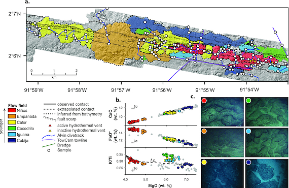

Download this file as a template.
Project Proposal: Seamount Mass-Wasting
Introduction to problem/question
Seamounts are oceanic volcanoes that form at nearly all seafloor tectonic settings. As oceanic plates are pulled apart, fissures form and eruptions of basaltic melt derived from decompression melting of the mantle occur. Over the course of hours to days, magmatic eruptions are focused in the center of the fissure because the thinner ends cool more rapidly. As the lava from this focused erutpion cools it builds the flanks of the seamount. Mass-wasting events are recorded in the morphology of seamounts as amphitheater shaped head scarps, talus, and erosive channels. Very few seamounts have been observed during construction, largely due to their remote location at the seafloor and difficulty detecting an erupting seamount from the surface. For these reasons much of their construction and deconstruction is based on scientific assumptions.
The Galapagos Spreading Center is a uniquely complex setting where the Nazca and Cocos plates meet within 100km of the Galapagos Hotspot. This study will look at the seamount Emapanada(2º6’N 92ºW) which is located on the Galapagos Spreading Center, off the coast of Ecuador. I hypothesis that Empanada experienced mass-wasting concurrent to its construction rather than exclusively after it. To test this hypothesis, I will model the emplacement of each seamount based on its observed and mapped lava morphologies, and changes in flank slope. The assessment will include maps of each seamount’s morphology based on previously collected dive video/pictures.
Problem / Question
This project seeks to determine if Empanada experienced mass-wasting during construction or exclusively post-construction.
Inspiring Examples
Example 1
Types of landslides along King County river corridors 
This graphic shows the type of output that can be created by using morphology to map mass-wasting events. I hope to produce a similar looking graphic for Empanada’s mass-wasting scars.
Example 2
Mapping lava flows from Nyamuragira volcano (1967–2011) 
While this lava flow map was created using satellite imagery a similar map could be complied based on radar data. This map does a good job of depicting the cross-cutting relationships of different lava flows. Older features are cut by younger features allowing researchers to date them relative to each other ### Example 3
Mapped lava flow fields along the Galápagos Spreading Center 
This example is the most ‘inspiring’ in the sense that the paper is what lead to this research. This study is the source of most of my data and in it the researches map the lava flow fields of Empanada and other seamounts in the region. However, these researchers mapped the flows in terms of their source while I will map flows from a single source in terms of sequence.
Proposed data sources
Base Map: Processed DSL-120A Sidescan Sonar Grids at 2 meter Spatial Resolution
* Format: NetCDF
* Link: http://www.marine-geo.org/tools/search/Files.php?data_set_uid=9464
Mappable morphology
* Sentry Video
** Link: https://geol.sc.edu/swhite/Sentry_data.html (temporarily down)
* Towcam Video
** Link: http://www.soest.hawaii.edu/gruvee/sci/TowCam/gruvee-towcam_reports.html
* Starboard Dive Video
** Available upon request by GRUVEE Team Link: http://www.soest.hawaii.edu/gruvee/
Proposed methods
I will the package ncdf to read the files for my basemap, this should give me a raster image of Empanada in R. The Netcdf file contains elevation information so following the instructions I’ve found Here I will turn that into a topographic map using the package ‘plotly’. From there I can create a 3D map using the packages ‘plot3D’ and ‘lattice’. In theory this will give me a nice 3D map showing a too scale representation of Empanda.
For reproducability, the features observed from the videos will be added to spreadsheet that is available in the code.
I hope to use the ‘raster’ package to overlay polygons of the the lava flows and mass-wasting scars, with ‘rgdal’ to create a new raster layer of this overlay.
If this doesn’t work out my back-up plan is to the function ’annotate to indicate where the features are although this will be a less effective method of communicating the relationships between features.
Expected results
I want to produce a single 3-D map of Empanada mass-wasting scars, bathymetry, and lava morphology. The map should clearly communicate the temporal relationship showing between the lava flows and mass-wasting events.